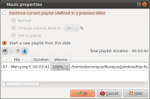
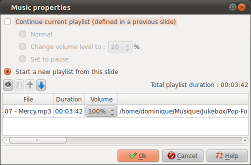

Introduction
The Music properties dialog allows
you to specify the music track:

This dialog is called by double-clicking the music zone of slides in the timeline of the main window.

This dialog is called by double-clicking the music zone of slides in the timeline of the main window.
Description of the dialog
The upper part of the dialog
Functional Principles
The main functional principle for music tracks is that as long as you do not change the settings, the previous settings apply.So, if:
- Slide 1 - Defines a play list
- Slide 2 - Contains no settings
- Slide 3 - Contains no settings
- Slide 4 - Defines a play list
- Slide 5 - Contains no settings
Then:
- Slide 2 and 3 continue to play the play list defined in slide 1
- Slide 5 continues to play the play list define in slide 4
Settings for the music track
| Continue current playlist |
Continues to play the
play list define by a previous slide :
|
||||||
| Start a new playlist |
Allows you to create a
new playlist. If a list defined in a previous slide, is still playing, it is stopped with a fade-out effect (progressive decline of the sound volume up to complete stop). |
The playlist (bottom part of the dialog)
This playlist section consists
of two parts:
The toolbar
The playlist
The music files are listed in the order in which they will be
played, from top to bottom.
The Volume column defines the " Master volume " for the file. This volume is independent of any reductions in the volume that you define in the upper part of the dialog.
- The toolbar containing controls for the playlist
- The list of the music files composing the playlist
The toolbar
 |
Adds a file to the
playlist A file selection dialog appears, allowing you to select a file. |
 |
Removes the current selected file from the playlist. |
| Changes the order in
which the music files will be played. Moves the currently selected file one step up. |
|
| Changes the order in
which the music files will be played. Moves the currently selected file one step down. |
The playlist
The music files are listed in the order in which they will be
played, from top to bottom.The Volume column defines the " Master volume " for the file. This volume is independent of any reductions in the volume that you define in the upper part of the dialog.
Remark
The fade in/out effects and the
increase/decrease of volume take place during the entering slide
transitions. Consequently:
- They occupy the same time as the entering transition.
- If a slide has a entering transition set to "No transition", the sound effect is not progressive but instantaneous.
See also
ffDiaporama 1.0